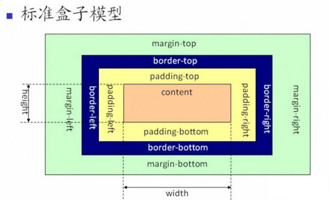
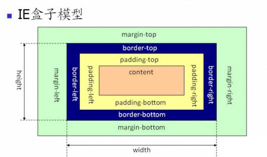

<!DOCTYPE HTML>
<html lang="zh-CN">
<head><meta name="generator" content="Hexo 3.8.0">
    <!--Setting-->
    <meta charset="UTF-8">
    <meta name="viewport" content="width=device-width, user-scalable=no, initial-scale=1.0, maximum-scale=1.0, minimum-scale=1.0">
    <meta http-equiv="X-UA-Compatible" content="IE=Edge,chrome=1">
    <meta http-equiv="Cache-Control" content="no-siteapp">
    <meta http-equiv="Cache-Control" content="no-transform">
    <meta name="renderer" content="webkit|ie-comp|ie-stand">
    <meta name="apple-mobile-web-app-capable" content="王永杰的网络日志">
    <meta name="apple-mobile-web-app-status-bar-style" content="black">
    <meta name="format-detection" content="telephone=no,email=no,adress=no">
    <meta name="browsermode" content="application">
    <meta name="screen-orientation" content="portrait">
    <!-- 自定义视频托管 -->
    <script src="https://player.polyv.net/script/polyvplayer.min.js"></script>
    <link rel="dns-prefetch" href="http://wangyongjie.top">
    <!--SEO-->

    <meta name="keywords" content="面试">


    <meta name="description" content="HTML
对Web标准的理解、浏览器内核差异、兼容性、hack、CSS基本功：布局、盒子模型、选择器优先级及使用、HTML5、CSS3、移动端适应。

1. 介绍一下CSS的盒子模型？
有两种，...">


<meta name="robots" content="all">
<meta name="google" content="all">
<meta name="googlebot" content="all">
<meta name="verify" content="all">

    <!--Title-->


<title>前端面试题目汇总 | 王永杰的网络日志</title>


    <link rel="alternate" href="/atom.xml" title="王永杰的网络日志" type="application/atom+xml">


    <link rel="icon" href="/favicon.ico">

    


<link rel="stylesheet" href="/css/bootstrap.min.css?rev=3.3.7">
<link rel="stylesheet" href="/css/font-awesome.min.css?rev=4.5.0">
<link rel="stylesheet" href="/css/style.css?rev=@@hash">


    


    <script>
        var _hmt = _hmt || [];
        (function() {
            var hm = document.createElement("script");
            hm.src = "https://hm.baidu.com/hm.js?f42ffe5fed856accbf91820f137dab46";
            var s = document.getElementsByTagName("script")[0];
            s.parentNode.insertBefore(hm, s);
        })();
    </script>


    

</head>

</html>
<!--[if lte IE 8]>
<style>
    html{ font-size: 1em }
</style>
<![endif]-->
<!--[if lte IE 9]>
<div style="ie">你使用的浏览器版本过低，为了你更好的阅读体验，请更新浏览器的版本或者使用其他现代浏览器，比如Chrome、Firefox、Safari等。</div>
<![endif]-->

<body>
    <header class="main-header" style="background-image:url(http://snippet.shenliyang.com/img/banner.jpg)">
    <div class="main-header-box">
        <a class="header-avatar" href="/" title="wangyongjie">
            
        </a>
        <div class="branding">
        	<!--<h2 class="text-hide">Snippet主题,从未如此简单有趣</h2>-->
            
                <h2> 我是谁 我在哪 我在做什么 </h2>
            
    	</div>
    </div>
</header>
    <nav class="main-navigation">
    <div class="container">
        <div class="row">
            <div class="col-sm-12">
                <div class="navbar-header"><span class="nav-toggle-button collapsed pull-right" data-toggle="collapse" data-target="#main-menu" id="mnav">
                    <span class="sr-only"></span>
                        <i class="fa fa-bars"></i>
                    </span>
                    <a class="navbar-brand" href="http://wangyongjie.top">王永杰的网络日志</a>
                </div>
                <div class="collapse navbar-collapse" id="main-menu">
                    <ul class="menu">
                        
                            <li role="presentation" class="text-center">
                                <a href="/"><i class="fa "></i>首页</a>
                            </li>
                        
                            <li role="presentation" class="text-center">
                                <a href="/categories/前端/"><i class="fa "></i>前端</a>
                            </li>
                        
                            <li role="presentation" class="text-center">
                                <a href="/categories/后端/"><i class="fa "></i>后端</a>
                            </li>
                        
                            <li role="presentation" class="text-center">
                                <a href="/categories/工具/"><i class="fa "></i>工具</a>
                            </li>
                        
                            <li role="presentation" class="text-center">
                                <a href="/webnav/"><i class="fa "></i>导航</a>
                            </li>
                        
                            <li role="presentation" class="text-center">
                                <a href="/archives/"><i class="fa "></i>时间轴</a>
                            </li>
                        
                            <li role="presentation" class="text-center">
                                <a href="/message/"><i class="fa "></i>留言板</a>
                            </li>
                        
                            <li role="presentation" class="text-center">
                                <a href="/categories/生活/"><i class="fa "></i>生活</a>
                            </li>
                        
                            <li role="presentation" class="text-center">
                                <a href="/about/"><i class="fa "></i>关于</a>
                            </li>
                        
                    </ul>
                </div>
            </div>
        </div>
    </div>
</nav>
    <section class="content-wrap">
        <div class="container">
            <div class="row">
                <main class="col-md-8 main-content m-post">
                    <p id="process"></p>
<article class="post">
    <div class="post-head">
        <h1 id="前端面试题目汇总">
            
	            前端面试题目汇总
            
        </h1>
        <div class="post-meta">
    
        <span class="categories-meta fa-wrap">
            <i class="fa fa-folder-open-o"></i>
            <a class="category-link" href="/categories/前端/">前端</a>
        </span>
    

    
        <span class="fa-wrap">
            <i class="fa fa-tags"></i>
            <span class="tags-meta">
                
                    <a class="tag-link" href="/tags/面试/">面试</a>
                
            </span>
        </span>
    

    
        
        <span class="fa-wrap">
            <i class="fa fa-clock-o"></i>
            <span class="date-meta">2017/12/21</span>
        </span>
        
    
</div>
            
            
            <p class="fa fa-exclamation-triangle warning">
                本文于<strong>500</strong>天之前发表，文中内容可能已经过时。
            </p>
        
    </div>
    
    <div class="post-body post-content">
        <h2 id="HTML"><a href="#HTML" class="headerlink" title="HTML"></a>HTML</h2><blockquote>
<p>对Web标准的理解、浏览器内核差异、兼容性、hack、CSS基本功：布局、盒子模型、选择器优先级及使用、HTML5、CSS3、移动端适应。</p>
</blockquote>
<h3 id="1-介绍一下CSS的盒子模型？"><a href="#1-介绍一下CSS的盒子模型？" class="headerlink" title="1. 介绍一下CSS的盒子模型？"></a>1. 介绍一下CSS的盒子模型？</h3><ul>
<li>有两种， IE 盒子模型、标准 W3C 盒子模型；</li>
<li>IE的content部分包含了 border 和 pading;</li>
<li>盒模型： 内容(content)、填充(padding)、边界(margin)、 边框(border).</li>
<li>box-sizing: content-box(标准的) | border-box(IE的) | inherit</li>
<li>IE:width = margin+content;标准:width = margin+boder+padding+border。</li>
</ul>
<p><br></p>
<h3 id="2-doctype作用？严格模式与混杂模式如何区分？他们有何意义？"><a href="#2-doctype作用？严格模式与混杂模式如何区分？他们有何意义？" class="headerlink" title="2. doctype作用？严格模式与混杂模式如何区分？他们有何意义？"></a>2. doctype作用？严格模式与混杂模式如何区分？他们有何意义？</h3><ul>
<li>doctype是申明文档类型，告诉浏览器以什么文档类型规范来解析这个文档。</li>
<li>严格模式的排版和JS运作模式是以该浏览器支持的最高标准执行的。</li>
<li>混杂模式中，页面以宽松的、向后兼容的方式显示。模拟老式浏览器的行为以防止站点无法工作。</li>
<li>doctype不存在或不正确会导致文档以混杂模式呈现。</li>
<li>严格模式与混杂模式存在的意义与其来源密切相关，如果说只存在严格模式，那么许多旧网站必然受到影响，如果只存在混杂模式，那么会回到当时浏览器大战时的混乱，每个浏览器都有自己的解析模式。</li>
</ul>
<h3 id="3-src和href的区别？"><a href="#3-src和href的区别？" class="headerlink" title="3. src和href的区别？"></a>3. src和href的区别？</h3><ul>
<li>href是指网络资源所在位置，建立和当前元素（锚点）或当前文档（链接）之间的链接，用于超链接。</li>
<li>src是指向外部资源的位置，指向的内容会嵌入到文档中当前标签所在的位置，在请求src资源时会将其指向的资源下载并应用到文档内，如js脚本，img图片和frame等元素。当浏览器解析到该元素时，会暂停其他资源的下载和处理，知道将该资源加载、编译、执行完毕，所以一般js脚本会放在底部而不是头部。</li>
</ul>
<h3 id="4-title与h1的区别、b与strong的区别、i与em的区别，img内title和alt的区别？"><a href="#4-title与h1的区别、b与strong的区别、i与em的区别，img内title和alt的区别？" class="headerlink" title="4. title与h1的区别、b与strong的区别、i与em的区别，img内title和alt的区别？"></a>4. title与h1的区别、b与strong的区别、i与em的区别，img内title和alt的区别？</h3><ul>
<li>title属性没有明确意义只表示是个标题，H1则表示层次明确的标题，对页面信息的抓取也有很大的影响；</li>
<li>strong是标明重点内容，有语气加强的含义，使用阅读设备阅读网络时：&lt;strong&gt;会重读，而&lt;b&gt;是展示强调内容。</li>
<li>i内容展示为斜体，em表示强调的文本；</li>
<li>title是对图片的说明和额外补充，如果需要在鼠标经过图片时出现文字提示应该用属性title。title属性的优先级高于alt text。</li>
<li>alt属性是为了给那些不能看到你文档中图像的浏览者提供文字说明的。所以alt属性的本意是用于替换图像，而不是为图像提供额外说明的，但是，在ie浏览器中，alt属性会变成文字提示，这本身是一种误导。所以，如果你使用firefox或者chrome，alt属性就会不管用。</li>
<li>应该准确使用语义样式标签, 但不能滥用, 如果不能确定时首选使用自然样式标签。</li>
</ul>
<h3 id="5-浏览器内核分别是？"><a href="#5-浏览器内核分别是？" class="headerlink" title="5. 浏览器内核分别是？"></a>5. 浏览器内核分别是？</h3><table>
<thead>
<tr>
<th>浏览器</th>
<th>内核</th>
<th>浏览器前缀</th>
</tr>
</thead>
<tbody>
<tr>
<td>Chrome(谷歌浏览器)</td>
<td>WebKit内核</td>
<td>-webkit-</td>
</tr>
<tr>
<td>Safari(苹果浏览器)</td>
<td>WebKit内核</td>
<td>-webkit-</td>
</tr>
<tr>
<td>Firefox(火狐浏览器)</td>
<td>Gecko内核</td>
<td>-moz-</td>
</tr>
<tr>
<td>IE(IE浏览器)</td>
<td>Trident内核</td>
<td>-ms-</td>
</tr>
<tr>
<td>Opera(欧朋浏览器)</td>
<td>Presto内核</td>
<td>-o-</td>
</tr>
</tbody>
</table>
<h3 id="6-说说你对语义化的理解？"><a href="#6-说说你对语义化的理解？" class="headerlink" title="6. 说说你对语义化的理解？"></a>6. 说说你对语义化的理解？</h3><ul>
<li>用正确的标签做正确的事。</li>
<li>让页面内容结构化，便于浏览器、搜索引擎解析。</li>
<li>在去掉或丢失样式的时候能让页面呈现出清晰的结构。</li>
<li>搜索引擎的爬虫依赖于标记来确定上下文和各个关键字的权重，有利于SEO。</li>
<li>便于团队开发和维护，语义化更具可读性，可以减少差异性。</li>
</ul>
<h3 id="7-HTML5为什么只需要写-lt-DOCTYPE-HTML-gt-？"><a href="#7-HTML5为什么只需要写-lt-DOCTYPE-HTML-gt-？" class="headerlink" title="7. HTML5为什么只需要写&lt;! DOCTYPE HTML&gt;？"></a>7. HTML5为什么只需要写&lt;! DOCTYPE HTML&gt;？</h3><ul>
<li>HTML5不基于sgml，因此不需要对DTD进行引用，但是需要doctype来规范浏览器的行为。</li>
<li>而HTML4.01基于sgml，所以需要DTD进行引用，才能告知浏览器文档所使用的文档类型。</li>
</ul>
<h3 id="8-iframe的优缺点？"><a href="#8-iframe的优缺点？" class="headerlink" title="8. iframe的优缺点？"></a>8. iframe的优缺点？</h3><ul>
<li>缺点：<br>1、会阻塞主页面的onload事件（iframe和主页面共享链接池，而浏览器对相同域的链接有限制，所以会影响页面的并行加载）。解决方法：通过js动态给iframe添加src属性值。<br>2、会增加http请求。<br>3、对搜索引擎不友好。<br>4、在移动端设备不能完全加载，会出现滚动条，影响用户体验。</li>
<li>优点：<br>1、解决加载缓慢的第三方内容如图标和广告的加载问题。<br>2、并行加载脚本。<br>3、程序调入静态页面比较方便。<br>4、页面和程序分离。</li>
</ul>
<h3 id="9-渐进增强和优雅降级？"><a href="#9-渐进增强和优雅降级？" class="headerlink" title="9. 渐进增强和优雅降级？"></a>9. 渐进增强和优雅降级？</h3><ul>
<li>渐进增强：针对低版本浏览器进行构建页面，保证最基本的功能，然后再针对高级浏览器进行效果、交互等改进和追加功能，达到更好的用户体验。</li>
<li>优雅降级：一开始就构建完整的功能，然后再针对低版本的浏览器进行兼容。</li>
</ul>
<h3 id="10-HTML5的新特性？"><a href="#10-HTML5的新特性？" class="headerlink" title="10. HTML5的新特性？"></a>10. HTML5的新特性？</h3><ul>
<li>HTML5不在是sgml的子集，主要是关于图形，位置，存储，多任务等功能的增加。</li>
</ul>
<h3 id="11-data-属性的作用？"><a href="#11-data-属性的作用？" class="headerlink" title="11. data-*属性的作用？"></a>11. data-*属性的作用？</h3><ul>
<li>data-<em>属性用于存储页面或应用程序的私有自定义数据。data-</em>属性赋予我们在所有HTML元素上嵌入自定义data属性的能力。存储的（自定义）数据能被页面的JavaScript中利用，以创建更好的用户体验（不进行ajax调用或服务器端数据库查询）。</li>
<li>data-*主要包括两个部分：<br>1、属性名不应该包含任何大写字母，并且在前缀“data-”之后必须有至少一个字符。<br>2、属性值可以是任意字符串。</li>
</ul>
<h3 id="12-如果把HTML5看成一个开放平台，那它的构建模块有哪些？"><a href="#12-如果把HTML5看成一个开放平台，那它的构建模块有哪些？" class="headerlink" title="12. 如果把HTML5看成一个开放平台，那它的构建模块有哪些？"></a>12. 如果把HTML5看成一个开放平台，那它的构建模块有哪些？</h3><ul>
<li>nav、header、section、footer。</li>
</ul>
<h3 id="13-什么是svg？"><a href="#13-什么是svg？" class="headerlink" title="13. 什么是svg？"></a>13. 什么是svg？</h3><ul>
<li>svg指可缩放矢量图形（Scalable Vector Graphics）。</li>
<li>svg用来定义于网络的基本矢量图形。</li>
<li>svg使用xml格式定义图形。</li>
<li>svg图形在放大或改变尺寸的情况下其图形质量不会有所损失。</li>
<li>svg是万维网联盟的标准。</li>
<li>svg与诸如dom和xsl之类的w3c是一个整体。</li>
</ul>
<h3 id="14-知道网页制作会用到的图片格式有哪些？"><a href="#14-知道网页制作会用到的图片格式有哪些？" class="headerlink" title="14. 知道网页制作会用到的图片格式有哪些？"></a>14. 知道网页制作会用到的图片格式有哪些？</h3><ul>
<li>png-8、png-24、JPEG、GIF、svg、webp。</li>
<li>webp格式：谷歌开发的一种旨在加快图片加载速度的图片格式。图片压缩体积大约只有JPEG的2/3，并能节省大量的服务器宽带资源和数据空间。在质量相同的情况下，webp格式图像比JPEG格式图像小40%。</li>
</ul>
<h3 id="15-页面重构怎么操作？"><a href="#15-页面重构怎么操作？" class="headerlink" title="15. 页面重构怎么操作？"></a>15. 页面重构怎么操作？</h3><ul>
<li>页面重构是指：在不改变外部行为的前提下，简化结构、添加可读性，而在网站前端保持一致的行为。也就是说在不改变UI的情况下，对网站进行优化，在扩展的同时保持一致的UI。</li>
<li>编写css、让页面结构更合理化，提升用户体验，实现良好的页面效果和提升性能。</li>
</ul>
<h3 id="16-如何实现浏览器多个标签页之间的通信？"><a href="#16-如何实现浏览器多个标签页之间的通信？" class="headerlink" title="16. 如何实现浏览器多个标签页之间的通信？"></a>16. 如何实现浏览器多个标签页之间的通信？</h3><ul>
<li>可以调用localStorage、cookie等本地存储方式。</li>
<li>localStorage另一个浏览上下文里被添加、修改或删除时，会触发一个事件，我们通过监听事件，控制它的值来进行页面信息通信。</li>
</ul>
<h3 id="17-对WEB标准以及W3C的理解与认识？"><a href="#17-对WEB标准以及W3C的理解与认识？" class="headerlink" title="17. 对WEB标准以及W3C的理解与认识？"></a>17. 对WEB标准以及W3C的理解与认识？</h3><ul>
<li>标签闭合、标签小写、不乱嵌套、提高搜索机器人搜索几率、使用外链css和js脚本、结构行为表现的分离、文件下载与页面速度更快、内容能被更多的用户所访问、内容能被更广泛的设备所访问、更少的代码和组件，容易维 护、改版方便，不需要变动页面内容、提供打印版本而不需要复制内容、提高网站易用性；</li>
</ul>
<h3 id="18-什么是响应式设计？"><a href="#18-什么是响应式设计？" class="headerlink" title="18. 什么是响应式设计？"></a>18. 什么是响应式设计？</h3><ul>
<li>它是关于网页制作的过程中让不同的设备有不同的尺寸和不同的功能。响应式设计是让所有的人能在这些设备上让网站运行正常 </li>
</ul>
<h3 id="19-请你谈谈Cookie的弊端"><a href="#19-请你谈谈Cookie的弊端" class="headerlink" title="19. 请你谈谈Cookie的弊端"></a>19. 请你谈谈Cookie的弊端</h3><ul>
<li><p>cookie</p>
<ol>
<li>IE6或更低版本最多20个cookie</li>
<li>IE7和之后的版本最后可以有50个cookie。</li>
<li>Firefox最多50个cookie</li>
<li>chrome和Safari没有做硬性限制</li>
<li>每个特定的域名下最多生成20个cookie</li>
<li>IE和Opera 会清理近期最少使用的cookie，Firefox会随机清理cookie。</li>
<li>cookie的最大大约为4096字节，为了兼容性，一般不能超过4095字节。</li>
<li>IE 提供了一种存储可以持久化用户数据，叫做uerData，从IE5.0就开始支持。每个数据最多128K，每个域名下最多1M。这个持久化数据放在缓存中，如果缓存没有清理，那么会一直存在。</li>
</ol>
</li>
<li><p>优点：极高的扩展性和可用性</p>
<ol>
<li>通过良好的编程，控制保存在cookie中的session对象的大小。</li>
<li>通过加密和安全传输技术（SSL），减少cookie被破解的可能性。</li>
<li>只在cookie中存放不敏感数据，即使被盗也不会有重大损失。</li>
<li>控制cookie的生命期，使之不会永远有效。偷盗者很可能拿到一个过期的cookie。</li>
</ol>
</li>
<li><p>缺点：</p>
<ol>
<li><code>Cookie</code>数量和长度的限制。每个domain最多只能有20条cookie，每个cookie长度不能超过4KB，否则会被截掉。</li>
<li>安全性问题。如果cookie被人拦截了，那人就可以取得所有的session信息。即使加密也与事无补，因为拦截者并不需要知道cookie的意义，他只要原样转发cookie就可以达到目的了。</li>
<li>有些状态不可能保存在客户端。例如，为了防止重复提交表单，我们需要在服务器端保存一个计数器。如果我们把这个计数器保存在客户端，那么它起不到任何作用。</li>
</ol>
</li>
</ul>
<h3 id="20-浏览器本地存储"><a href="#20-浏览器本地存储" class="headerlink" title="20. 浏览器本地存储"></a>20. 浏览器本地存储</h3><ul>
<li>在较高版本的浏览器中，js提供了sessionStorage和globalStorage。在HTML5中提供了localStorage来取代globalStorage。</li>
<li>html5中的Web Storage包括了两种存储方式：sessionStorage和localStorage。</li>
<li>sessionStorage用于本地存储一个会话（session）中的数据，这些数据只有在同一个会话中的页面才能访问并且当会话结束后数据也随之销毁。因此sessionStorage不是一种持久化的本地存储，仅仅是会话级别的存储。</li>
<li>而localStorage用于持久化的本地存储，除非主动删除数据，否则数据是永远不会过期的。</li>
</ul>
<h3 id="21-web-storage和cookie的区别"><a href="#21-web-storage和cookie的区别" class="headerlink" title="21. web storage和cookie的区别"></a>21. web storage和cookie的区别</h3><ul>
<li>Web Storage的概念和cookie相似，区别是它是为了更大容量存储设计的。Cookie的大小是受限的，并且每次你请求一个新的页面的时候Cookie都会被发送过去，这样无形中浪费了带宽，另外cookie还需要指定作用域，不可以跨域调用。</li>
<li>除此之外，Web Storage拥有setItem,getItem,removeItem,clear等方法，不像cookie需要前端开发者自己封装setCookie，getCookie。</li>
<li>但是Cookie也是不可以或缺的：Cookie的作用是与服务器进行交互，作为HTTP规范的一部分而存在 ，而Web Storage仅仅是为了在本地“存储”数据而生</li>
<li>浏览器的支持除了IE７及以下不支持外，其他标准浏览器都完全支持(ie及FF需在web服务器里运行)，值得一提的是IE总是办好事，例如IE7、IE6中的UserData其实就是javascript本地存储的解决方案。通过简单的代码封装可以统一到所有的浏览器都支持web storage。</li>
<li>localStorage和sessionStorage都具有相同的操作方法，例如setItem、getItem和removeItem等</li>
</ul>
<h2 id="CSS"><a href="#CSS" class="headerlink" title="CSS"></a>CSS</h2><h2 id="JavasSript"><a href="#JavasSript" class="headerlink" title="JavasSript"></a>JavasSript</h2><h2 id="参考"><a href="#参考" class="headerlink" title="参考"></a>参考</h2><ul>
<li><a href="https://www.cnblogs.com/En-summerGarden/p/6973522.html" target="_blank" rel="noopener">前端面试题总结（一）HTML篇</a></li>
<li><a href="https://www.cnblogs.com/autismtune/p/5210116.html" target="_blank" rel="noopener">最全前端面试问题及答案总结</a></li>
</ul>
<p><br><strong>本文作者</strong>：王永杰<br><strong>本文地址</strong>： <a href="http://wangyongjie.top/blog/4584/">http://wangyongjie.top/blog/4584/</a> <br><strong>版权声明</strong>：本博客所有文章除特别声明外，均采用 <a href="http://creativecommons.org/licenses/by-nc-sa/3.0/cn/" target="_blank" rel="noopener">CC BY-NC-SA 3.0 CN</a> 许可协议。转载请注明出处！</p>

    </div>
    
        <div class="reward" ontouchstart>
    <div class="reward-wrap">赏
        <div class="reward-box">
            
                <span class="reward-type">
                    <b>支付宝打赏</b>
                </span>
            
            
                <span class="reward-type">
                    <b>微信打赏</b>
                </span>
            
        </div>
    </div>
    <p class="reward-tip">一分也是爱</p>
</div>


    
    <div class="post-footer">
        <div>
            
                转载声明：商业转载请联系作者获得授权,非商业转载请注明出处 <a href="http://wangyongjie.top" target="_blank"> http://wangyongjie.top</a>
            
        </div>
        <div>
            
        </div>
    </div>
</article>

<div class="article-nav prev-next-wrap clearfix">
    
        <a href="/blog/12266/" class="pre-post btn btn-default" title="Bootstrap 媒体查询">
            <i class="fa fa-angle-left fa-fw"></i><span class="hidden-lg">上一篇</span>
            <span class="hidden-xs">Bootstrap 媒体查询</span>
        </a>
    
    
        <a href="/blog/9758/" class="next-post btn btn-default" title="CSS 中的 float、BFC、position 和 inline-block">
            <span class="hidden-lg">下一篇</span>
            <span class="hidden-xs">CSS 中的 float、BFC、position 和 inline-block</span><i class="fa fa-angle-right fa-fw"></i>
        </a>
    
</div>


    <div id="comments">
        
	
<div id="lv-container" data-id="city" data-uid="MTAyMC8zNDc5OS8xMTMzNg==">
  <script type="text/javascript">
     (function(d, s) {
         var j, e = d.getElementsByTagName(s)[0];
         if (typeof LivereTower === 'function') { return; }
         j = d.createElement(s);
         j.src = 'https://cdn-city.livere.com/js/embed.dist.js';
         j.async = true;
         e.parentNode.insertBefore(j, e);
     })(document, 'script');
  </script>
</div>


    </div>


                </main>
                
                    <aside id="article-toc" role="navigation" class="col-md-4">
    <div class="widget">
        <h3 class="title">文章目录</h3>
        
            <ol class="toc"><li class="toc-item toc-level-2"><a class="toc-link" href="#HTML"><span class="toc-text">HTML</span></a><ol class="toc-child"><li class="toc-item toc-level-3"><a class="toc-link" href="#1-介绍一下CSS的盒子模型？"><span class="toc-text">1. 介绍一下CSS的盒子模型？</span></a></li><li class="toc-item toc-level-3"><a class="toc-link" href="#2-doctype作用？严格模式与混杂模式如何区分？他们有何意义？"><span class="toc-text">2. doctype作用？严格模式与混杂模式如何区分？他们有何意义？</span></a></li><li class="toc-item toc-level-3"><a class="toc-link" href="#3-src和href的区别？"><span class="toc-text">3. src和href的区别？</span></a></li><li class="toc-item toc-level-3"><a class="toc-link" href="#4-title与h1的区别、b与strong的区别、i与em的区别，img内title和alt的区别？"><span class="toc-text">4. title与h1的区别、b与strong的区别、i与em的区别，img内title和alt的区别？</span></a></li><li class="toc-item toc-level-3"><a class="toc-link" href="#5-浏览器内核分别是？"><span class="toc-text">5. 浏览器内核分别是？</span></a></li><li class="toc-item toc-level-3"><a class="toc-link" href="#6-说说你对语义化的理解？"><span class="toc-text">6. 说说你对语义化的理解？</span></a></li><li class="toc-item toc-level-3"><a class="toc-link" href="#7-HTML5为什么只需要写-lt-DOCTYPE-HTML-gt-？"><span class="toc-text">7. HTML5为什么只需要写&lt;! DOCTYPE HTML&gt;？</span></a></li><li class="toc-item toc-level-3"><a class="toc-link" href="#8-iframe的优缺点？"><span class="toc-text">8. iframe的优缺点？</span></a></li><li class="toc-item toc-level-3"><a class="toc-link" href="#9-渐进增强和优雅降级？"><span class="toc-text">9. 渐进增强和优雅降级？</span></a></li><li class="toc-item toc-level-3"><a class="toc-link" href="#10-HTML5的新特性？"><span class="toc-text">10. HTML5的新特性？</span></a></li><li class="toc-item toc-level-3"><a class="toc-link" href="#11-data-属性的作用？"><span class="toc-text">11. data-*属性的作用？</span></a></li><li class="toc-item toc-level-3"><a class="toc-link" href="#12-如果把HTML5看成一个开放平台，那它的构建模块有哪些？"><span class="toc-text">12. 如果把HTML5看成一个开放平台，那它的构建模块有哪些？</span></a></li><li class="toc-item toc-level-3"><a class="toc-link" href="#13-什么是svg？"><span class="toc-text">13. 什么是svg？</span></a></li><li class="toc-item toc-level-3"><a class="toc-link" href="#14-知道网页制作会用到的图片格式有哪些？"><span class="toc-text">14. 知道网页制作会用到的图片格式有哪些？</span></a></li><li class="toc-item toc-level-3"><a class="toc-link" href="#15-页面重构怎么操作？"><span class="toc-text">15. 页面重构怎么操作？</span></a></li><li class="toc-item toc-level-3"><a class="toc-link" href="#16-如何实现浏览器多个标签页之间的通信？"><span class="toc-text">16. 如何实现浏览器多个标签页之间的通信？</span></a></li><li class="toc-item toc-level-3"><a class="toc-link" href="#17-对WEB标准以及W3C的理解与认识？"><span class="toc-text">17. 对WEB标准以及W3C的理解与认识？</span></a></li><li class="toc-item toc-level-3"><a class="toc-link" href="#18-什么是响应式设计？"><span class="toc-text">18. 什么是响应式设计？</span></a></li><li class="toc-item toc-level-3"><a class="toc-link" href="#19-请你谈谈Cookie的弊端"><span class="toc-text">19. 请你谈谈Cookie的弊端</span></a></li><li class="toc-item toc-level-3"><a class="toc-link" href="#20-浏览器本地存储"><span class="toc-text">20. 浏览器本地存储</span></a></li><li class="toc-item toc-level-3"><a class="toc-link" href="#21-web-storage和cookie的区别"><span class="toc-text">21. web storage和cookie的区别</span></a></li></ol></li><li class="toc-item toc-level-2"><a class="toc-link" href="#CSS"><span class="toc-text">CSS</span></a></li><li class="toc-item toc-level-2"><a class="toc-link" href="#JavasSript"><span class="toc-text">JavasSript</span></a></li><li class="toc-item toc-level-2"><a class="toc-link" href="#参考"><span class="toc-text">参考</span></a></li></ol>
        
    </div>
</aside>

                
            </div>
        </div>
    </section>
    <footer class="main-footer">
    <div class="container">
        <div class="row">
        </div>
    </div>
</footer>

<a id="back-to-top" class="icon-btn hide">
	<i class="fa fa-chevron-up"></i>
</a>


    <div class="copyright">
    <div class="container">
        <div class="row">
            <div class="col-sm-12">
                <div class="busuanzi">
    
</div>

            </div>
            <div class="col-sm-12">
                <span>Copyright &copy; 2019
                </span> |
                <span>
                    Powered by <a href="//hexo.io" class="copyright-links" target="_blank" rel="nofollow">Hexo</a>
                </span> |
                <span>
                    Theme by <a href="//github.com/shenliyang/hexo-theme-snippet.git" class="copyright-links" target="_blank" rel="nofollow">Snippet</a>
                </span>
            </div>
        </div>
    </div>
</div>


<script src="/js/app.js?rev=@@hash"></script>

</body>
</html>